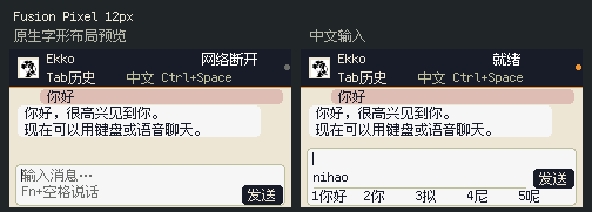

EkkoStudio · Cardputer-Adv 安装教程
版本：v8.3.0-factory1.7.0 · Ekko v8.3.0 ＋ 原厂中文 v1.7.0 整理日期：2026-10-17
开发样机已安装这两套应用，并通过完整闪存读回。 用户已确认中文、聊天文字与语音、SD 录音两次回放，以及空调调温／风速／摆风和退出重进偏好正常。首次安装的空 NVS 整机镜像仍只有离线验证，因此本次为预发布。请按自己的设备状态选择安装方式。
1. 先选安装方式
| 你的设备情况 | 选择文件 | 写入地址 | 结果 |
|---|---|---|---|
| 已装本项目同布局双固件，要更新 Ekko | firmware/ekko-update-0x10000.bin |
0x10000 |
只更新 Ekko，保留原厂应用与设置 |
| 已装本项目同布局双固件，要更新中文原厂、SD 录音和空调遥控 | firmware/factory-update-0x340000.bin |
0x340000 |
只更新原厂应用，保留 Ekko 与设置 |
| 同型号新机／其他分区布局，或明确要清空后重装 | firmware/first-install-dual-8MiB-0x0000.bin |
0x0000 |
安装原厂菜单＋Ekko 双固件；清除旧配置，重新配网与首次绑定 |
适用：M5Stack Cardputer-Adv，ESP32-S3，8MiB Flash。 普通 Cardputer、ESP32-C3 或其他外形相似的板子，不按本教程刷。
已验收的是现有设备上保留设置更新后的 Ekko v8.3.0 与原厂中文 v1.7.0。空 NVS 首刷镜像由公开引导程序、分区表和这两份应用重新组合，未从私人整机备份提取；已做结构、来源和校验检查，尚未在空白设备上做首次开机实测。应用运行验收不能代替整机首启验收。
2. 准备工具和数据线
准备可传数据的 USB-C 线。先退出 M5Burner、Arduino 串口监视器、PlatformIO 监视器和其他占用设备串口的窗口；电脑 Studio 可以继续开着。
Mac：如果已经能运行 uv／uvx，跳过安装。已安装 Homebrew 的电脑可运行：
brew install uv
Windows：在 PowerShell 中安装 uv，完成后重新打开 PowerShell：
winget install --id=astral-sh.uv -e
没有上述包管理器时，按 uv 官方安装说明 安装。首次运行以下命令需要联网下载固定版本的烧录工具；包内没有捆绑 Python 或烧录驱动。
uvx --from esptool==4.11.0 esptool.py version
应显示 4.11.0。本教程固定使用该版本，避免命令随新版本更名。烧录命令以 Espressif 官方 esptool v4 文档 为依据；本机版本和参数帮助已实际核对。
打开包目录
Mac 打开「终端」，输入 cd（后面有一个空格），把解压后包含 firmware/ 和本教程的文件夹拖进终端，再按回车。
Windows 解压到本地文件夹，在该文件夹空白处右键选择「在终端中打开」。不要在 ZIP 压缩包里面直接执行。
找到自己的串口
插线后运行：
uv run --with pyserial python -m serial.tools.list_ports -v
找到 M5 对应的端口。Mac 常见为 /dev/cu.usbmodem...，Windows 为 COM...；本机曾用的 /dev/cu.usbmodem1234 只是示例，其他电脑可能不同。
Mac 设置端口变量，将示例换成实际端口：
M5_PORT="/dev/cu.usbmodem1234"
Windows PowerShell 设置端口变量，将示例换成实际端口：
$M5_PORT="COM5"
下文命令中的 "$M5_PORT" 在这两种终端均会使用刚设置的端口。
无法连接时：手动进入下载模式
- 拔掉 USB，把侧面电源开关拨到 OFF。
- 按住机身顶部 G0 按钮，保持按住并重新插入 USB。
- 约两秒后松开 G0。屏幕黑着是正常现象。
- 再列一次串口；下载模式可能出现不同端口，必要时重设变量。
这里的 G0 是顶部实体按钮；OK 是键盘右侧回车键，两者不同。该流程已在开发样机上使用成功；官方硬件资料见 Cardputer-Adv 文档。
确认芯片和容量：
uvx --from esptool==4.11.0 esptool.py --chip esp32s3 --port "$M5_PORT" flash_id
应识别 ESP32-S3，且检测 Flash 为 8MB。容量不符或工具报告安全启动／加密保护时先停止，不添加 --force。
3. 先保留私人备份
已有任何设置或固件的设备，先完整备份：
uvx --from esptool==4.11.0 esptool.py --chip esp32s3 --port "$M5_PORT" --baud 460800 read_flash 0 ALL ../M5-before-install-PRIVATE.bin
成功后的备份应为 8,388,608 字节。保存位置在安装包上一层。若已有同名备份，请先换一个文件名，避免覆盖。它包含设备私有配置，自己保存，不随安装包转发。本交付不包含任何设备的私人备份。
4. 方式 A：保留设置升级（现有双固件）
仅当原厂菜单已有本项目的 EkkoStudio，且现有双固件可以正常使用时选择本方式。先完成备份。
核对现有分区表
uvx --from esptool==4.11.0 esptool.py --chip esp32s3 --port "$M5_PORT" --baud 460800 read_flash 0x8000 0xC00 ../M5-current-partitions.bin
Mac 比较本包的分区表：
cmp ../M5-current-partitions.bin components/partitions.bin
没有输出且返回正常表示一致。Windows PowerShell 查看 SHA256：
(Get-FileHash ../M5-current-partitions.bin -Algorithm SHA256).Hash
应为：
CA0C296C78733EF25A84D9077F534DC90ADF32D510A9D6D0704E4B86A39EE479
若不一致，停止方式 A；不要把 app 文件写到其他布局里。对应布局为 app0=0x10000/0x330000，factory=0x340000/0x400000。
同时更新两套应用
若两套都要更新，运行：
uvx --from esptool==4.11.0 esptool.py --chip esp32s3 --port "$M5_PORT" --baud 460800 write_flash 0x10000 firmware/ekko-update-0x10000.bin 0x340000 firmware/factory-update-0x340000.bin
只写两个应用分区，不写 Wi-Fi／绑定所在的 NVS、启动选择、分区表或数据区。不要附加 erase_flash 或 --erase-all，不要同时刷 components。 看到正常完成信息后，分别核对：
uvx --from esptool==4.11.0 esptool.py --chip esp32s3 --port "$M5_PORT" --baud 460800 verify_flash 0x10000 firmware/ekko-update-0x10000.bin
uvx --from esptool==4.11.0 esptool.py --chip esp32s3 --port "$M5_PORT" --baud 460800 verify_flash 0x340000 firmware/factory-update-0x340000.bin
只更新原厂中文／SD 录音／空调遥控
已在用本次 Ekko v8.3.0、只想更新原厂工具时，改用下面一条写入命令：
uvx --from esptool==4.11.0 esptool.py --chip esp32s3 --port "$M5_PORT" --baud 460800 write_flash 0x340000 firmware/factory-update-0x340000.bin
然后核对原厂分区：
uvx --from esptool==4.11.0 esptool.py --chip esp32s3 --port "$M5_PORT" --baud 460800 verify_flash 0x340000 firmware/factory-update-0x340000.bin
只更新 Ekko
不更新原厂工具时，只运行：
uvx --from esptool==4.11.0 esptool.py --chip esp32s3 --port "$M5_PORT" --baud 460800 write_flash 0x10000 firmware/ekko-update-0x10000.bin
uvx --from esptool==4.11.0 esptool.py --chip esp32s3 --port "$M5_PORT" --baud 460800 verify_flash 0x10000 firmware/ekko-update-0x10000.bin
完成后正常重启。若仍停在黑屏下载状态，松开 G0、拔线，将开关拨 ON 后重新供电。设备通常先回原厂菜单；看到原厂 Logo 时按任意键继续，选择 EkkoStudio → OK。
现有配网与绑定应保留。开发样机当前两套应用均有完整读回核对记录；对应应用更新时，另一个应用、NVS、启动选择、分区表和其他数据区均与刷前备份保持一致。这个结论以项目记录中的实际更新操作为准，不表示可以跳过备份或随意改写分区。
5. 方式 B：首次安装／清空重装
本方式会覆盖完整 8MiB Flash，清除旧 Wi-Fi、登录绑定、会话缓存及其他设备设置。 必须先备份；想保留设置时用方式 A。
确认设备型号、容量和端口后，只写这一份整机文件：
uvx --from esptool==4.11.0 esptool.py --chip esp32s3 --port "$M5_PORT" --baud 460800 write_flash 0x0000 firmware/first-install-dual-8MiB-0x0000.bin
这个完整文件已包含引导程序、分区表、原厂中文 v1.7.0 与 Ekko v8.3.0 应用，并把设置区留空；无需另行擦除整机，也不用再分别刷 components。
完成后验证：
uvx --from esptool==4.11.0 esptool.py --chip esp32s3 --port "$M5_PORT" --baud 460800 verify_flash 0x0000 firmware/first-install-dual-8MiB-0x0000.bin
验证可能需要数分钟。等待工具完整结束，不拔线。再按方式 A 末尾说明正常供电。按空白启动选择的代码逻辑，应先进入原厂菜单；此空设置首启组合尚未实机验收，若启动异常，保留日志和先前备份，不反复猜地址刷写。
components 是来源与重建用材料。不要在原厂源码中直接运行 idf.py flash 替代上述整机安装：原厂工程另有 ESP-IDF 5.4.2 引导程序，不能和本组合已验证的 4.4.7 引导程序混刷。
6. 首次配网和绑定电脑
在 M5 配 Wi-Fi
- 原厂 Logo 出现后按任意键进菜单，选择 网络设置（旧版名为 SetWiFi），按键盘 OK。
;或,选上一个；.或/选下一个，OK 进入密码页。- 输入密码，再按 OK。看到 已连接并保存后，按 OK 或顶部 G0 回菜单。
- 选择 EkkoStudio，按 OK，播放启动视频后进入 16 Agent 页。
「网络设置」内 R 重扫、M 手动输入网络名、Tab 清空密码。同一个已保存网络会带入密码；选其他网络时密码为空。两套固件共享成功保存的 Wi-Fi，不必进入 Ekko 再配一次。支持 2.4GHz；手机热点可开启最大兼容性／2.4GHz。需要浏览器二次认证的公共 Wi-Fi 不能只凭无线连接状态判断联网成功。
原厂开机自动尝试连接已保存网络；这是启动时的一次尝试，在原厂应用中掉线时必要可重新打开「网络设置」。不要把它与 Ekko 内的后台恢复机制混为一谈。
第一次绑定 Studio
电脑和 M5 先接同一局域网。电脑打开配套 Studio，并确认要使用的 Agent、模型和账号本身可正常对话。
在同网手机／电脑浏览器打开 M5 当时显示的 IP + /device，例如 http://192.168.0.123/device（仅示例，以设备实际 IP 为准）。在设备页发现并选择电脑，使用自己的 Studio 账号登录，选择 Profile，例如 default。密码和 API Key 不需要写进固件，也不要发到聊天里。
电脑端兼容边界：本包不包含电脑 Studio 安装程序；新增的 desktop-support/ 提供配套补丁与说明，使用前先读 电脑端配套说明。当前 16 Agent 和打字聊天使用 MCU 扩展协议，电脑端需支持 Agent 确认及 chatProtocol:1。本机已验收环境为 0.7.36-cardputer.5，不承诺任意未适配的原版 Studio 直接兼容。补丁有来源版本及适配范围，不能当成通用一键安装器。若显示“需要更新后台”或长期等待后台，先检查电脑端兼容性，不要反复刷 M5。
首次安装没有任何人的绑定资料，需自己完成这一次登录。保留设置升级则继续使用原绑定。16项菜单存在不代表所有Agent已配置；各Agent仍需自己的CLI、账号、API Key和可用模型。
出门使用远程
电脑保持开机联网、Studio 和 Agent 可用，并开启远程中继；在设备管理中完成该电脑远程入口的首次绑定／Profile保存。以后连接能访问官方中继的2.4GHz网络，可使用保存的绑定自动恢复，不需每换一次网络重登。
已有实测：手机热点跨网文字、语音、设备重启与短暂断网后自动恢复正常；另一路宽带测试网络存在官方中继访问超时。不要将该结果理解为“任何Wi-Fi都保证可用”。账号退出、凭据撤销或真实认证失败时仍可能需要重新登录；公共Wi-Fi的网页认证也需另外完成。
7. 日常按键速查
屏幕不支持触摸，使用实体键盘。
| 场景／操作 | 按键 |
|---|---|
| Agent 首页选择 | 左 ,／右 /；上 ;／下 . 也可选择 |
| 进入当前 Agent 聊天 | OK／回车 |
| 输入中文 | 拼音连写，空格或数字1–5选字词；[／] 翻候选页 |
| 中英文切换 | Ctrl＋空格，顶部对应显示「中文 Ctrl+Space」／「英文 Ctrl+Space」 |
| 发送消息 | OK；正在拼音组合时，第一次OK上屏，再按一次才发送 |
| 换行 | Shift＋OK 或 Fn＋OK |
| 语音 | 按住 Fn＋空格说话，松开发送 |
| 查看旧记录 | Tab，再 ; 上翻、. 下翻，,／/ 翻页；R 到最新；Tab／OK 回输入 |
| 返回 Agent 页 | 聊天中按 Esc（左上角键） |
| 返回原厂菜单 | Agent 首页再按 Esc |
正文、输入框、状态均为原生12px；菜单项名称是 EkkoStudio。Fn＋空格提示保留在空输入框，按键音和语音沿用已验收的省内存缓冲版本：局域网 → 官方中继 → 局域网三轮实听均顺畅，真实聊天识别、文字与声音也已确认正常。
8. SD 卡录音与回放
这是原厂菜单里的「录音回放」，与 Ekko 聊天的 Fn＋空格语音分开使用。屏幕不支持触摸。
- 关机后插入可读写的 FAT32 microSD 卡，再开机。固件不会格式化卡，也不会覆盖旧录音。
- 原厂菜单 →「录音回放」→ 按 N 开始新录音。首次没有文件时也可按 OK 开始。
- 说话后按 OK 停止保存，等返回文件列表。录音时按顶部 G0 会先保存，再退出。
- 列表用上
;／下.选择，按 OK 回放；播放时按 OK 停止，G0 回原厂菜单。 - 退出后重新进入，仍可从列表找到已保存的录音。关机后取卡，可在电脑复制或播放
/RECORD/REC00001.WAV等文件。
格式为 16kHz、16-bit、单声道 PCM WAV，约 1.92MB／分钟。录音和回放使用固定 24KiB PCM 缓冲，整段声音留在 SD 卡，不随录音时长持续占用 RAM。列表显示最新 64 条有效录音，更早的文件仍留在卡上。
样机已确认正常保存、首次回放、G0 退出后重进再次回放。尚未单独验收断电重开后的回放。 正常停止会完成 WAV 头部和同步；突然断电、强制退出或录音中拔卡，仍可能损失最后一段或损坏当前文件。没有卡、卡满或读写失败时按屏幕错误处理，再按 OK 重试。
9. 美的空调遥控
原厂菜单 → 「红外遥控」，默认进入 B COOLIX 正式主控页。请把 M5 红外发射端对准空调接收位置，先在较近距离测试。
| 操作 | 按键与含义 |
|---|---|
| 选温度／模式／风速 | 上 ;／下 .，或 Fn＋方向键 |
| 调整选中项 | 左 ,／右 /，或 Fn＋方向键；只改屏幕设定，不自动发射 |
| 应用当前全部设定并开机 | OK（回车）；这一步会发送开机指令 |
| 按当前设定开机／关机 | 1 开机、0 关机 |
| 更多功能 | Tab 打开滚动菜单，上下选择、OK 执行 |
| 更多／兼容／NEC 返回主控 | Tab 或 Esc |
| 返回原厂菜单 | 顶部 G0；发送中也可取消退出 |
- 温度 17～30℃；模式为制冷、除湿、自动、制热、送风；风速为自动、低风、中风、高风。
- 送风模式显示
--，不发送设定温度；先前温度偏好仍保留，切回其他模式后恢复。 - 更多菜单包含上下摆风、摆风点动、睡眠、强力、屏显、清洁，以及兼容测试 A/B/C 和 NEC 手动地址／命令输入。切换指令不是绝对开／关：重复按 OK 可能把功能再次切回，点动是再走一步。
- 屏幕显示的是待发设定／已发信号，不是空调回传状态；不会把“已发送”当成“空调已经执行”。拿原遥控器修改后，M5 也不会自动知道。
- 温度、模式、风速偏好保存在设备，成功发送或正常退出时尝试保存；不保存未经回读的摆风／睡眠等开关真值。正常退出再进入恢复偏好已实测，断电后恢复尚未另做实体测试。退出时保存失败目前只记日志，下次可能继续用旧值；不会阻止遥控或退出。
- 兼容测试页仍是 A MIDEA、B COOLIX、C BOSCH144：左右换候选，
1发送固定 26℃制冷自动风，0发关机；进入、切换方案和 OK 都不自动发射。测试设定不会覆盖正式 B 主控的偏好。
实测边界：用户这台美的空调已确认调温、风速、摆风和退出重进偏好正常。睡眠、强力、屏显、清洁及其余模式未逐项实机验收；其他型号也需对照实际响应。协议与主机测试通过不能替代你家空调的兼容测试。本版不提供定时、半度、ECO 或红外学习功能。
10. 常见问题
- 找不到串口：确认是数据线，换电脑直连 USB 口；按前面的 G0 流程进入下载模式，再列端口。下载前后端口可能变化。
- 串口被占用：关闭串口监视器、M5Burner 和其他终端连接后重试。
- 连接或写入超时：手动下载模式后重试；将 460800 降为 115200，换线或接口。保留报错，不强制绕过检查。
- 刷完先出现原厂菜单：是双固件设计；选 EkkoStudio，按 OK。顶部 G0 与键盘 OK 不是同一个键。
- Wi-Fi 显示已连但没有回复：还需电脑 Studio、对应 Agent 及配套协议可用。远程还需中继可达；无线连接不等于后台连接。
- 只有原厂菜单，没有 EkkoStudio：先确认安装的是本包同布局双固件，而不是未改动的 M5 官方原厂包。普通原厂菜单不会自动获得此入口。
- 更新后还是旧原厂功能：检查是否也更新了
factory-update-0x340000.bin。只刷 Ekko app 不会更新原厂录音／遥控工具。 - SD 卡不能用：检查 FAT32、卡是否可写及剩余空间，关机后重新插卡。固件不会自动格式化或删除旧文件。
- 红外提示发出但空调没反应：检查方向／距离；这只是发射完成，没有回执，不代表该型号支持所有命令。正式 B 与 A/C 候选测试分开使用。
- 想用 M5Burner 官方目录找这版：这是社区适配包，不会因打包或发布 GitHub 就自动上架官方目录。
11. 版本、校验和源码
| 文件 | 大小 | SHA256 |
|---|---|---|
firmware/ekko-update-0x10000.bin |
3,300,528B | c5898d0e79d600aec884c5be7c2e08a15a3301bc6a983b19ed5cd389546e7448 |
firmware/factory-update-0x340000.bin |
3,029,536B | d9eb27301696f863041f420a4a2cb76500c54b437414e9823dffce257e71db51 |
firmware/first-install-dual-8MiB-0x0000.bin |
8,388,608B | 78af7824379af493cce2c212e8e7520c42e53958e1eb6eda02a6a3822e7c1723 |
Mac 可在包目录检查所有文件：
shasum -a 256 -c SHA256SUMS.txt
Windows 可用 Get-FileHash 文件路径 -Algorithm SHA256 检查关键文件。文件完整性校验不是发布者数字签名。
source/ekko-cardputer-adv/：Ekko v8.3.0 板级源码、固定依赖、字体／头像来源与许可。source/factory-cardputer-adv/：原厂中文 v1.7.0 源码、SD WAV、空调遥控、测试和依赖。未宣称任意电脑重建均逐字节一致。desktop-support/：电脑端配套补丁和适配说明，不是完整 Studio 安装程序。components/：公开引导程序、共同分区表与原厂应用构建材料。新手按本教程使用firmware/文件，不逐个猜地址刷 components。evidence/：应用读回、功能反馈、离线组装和来源记录；没有私人整机备份。preview/：旧版历史布局参考，由真实字形与绘制指令生成，非实机照片，不代表本次全部页面。
本包不包含私人 Wi-Fi 密码、登录凭据、API Key、私人整机备份或用户录音。首次使用须绑定自己的电脑并配置 Agent。品牌头像与字体保留原来源和许可；原厂菜单存在不代表 LoRa／GPS 等外设都已逐项实测。许可与来源见 第三方说明。
历史字体布局参考
以下是旧版历史字形与界面绘制指令生成的参考，非实机照片，不代表本次全部页面。
